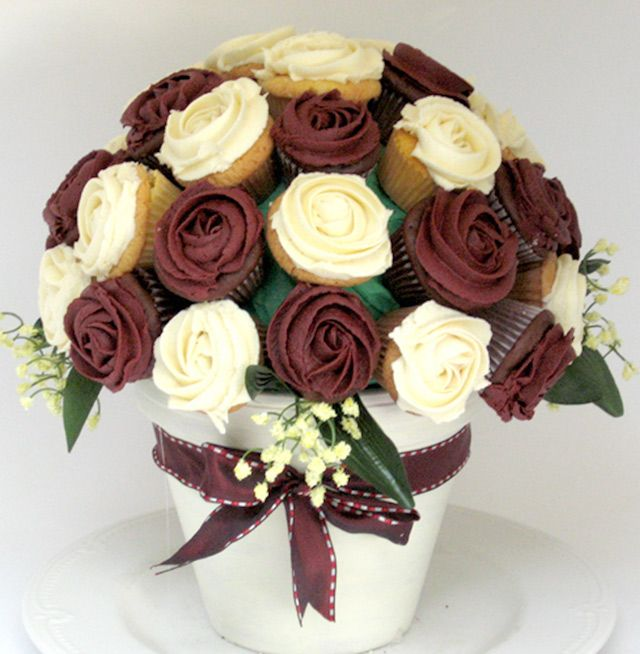
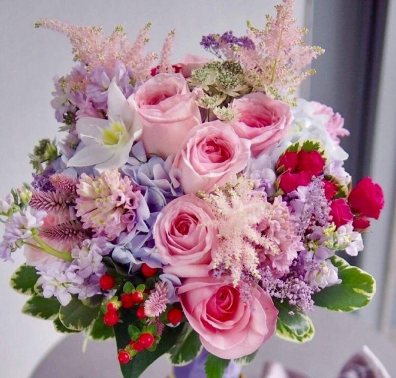

Фото Цветка 1
Красивый цветок с яркими лепестками

Фото Цветка 2
Нежный и ароматный цветок
Фото Цветка 3
Цветок с приятным вкусом и ароматом
Фото Цветка 4
Вкусный и привлекательный цветок

Фото Цветка 5
Красивый букет из разноцветных цветов

Фото Цветка 6
Изысканный и утонченный цветочный аромат